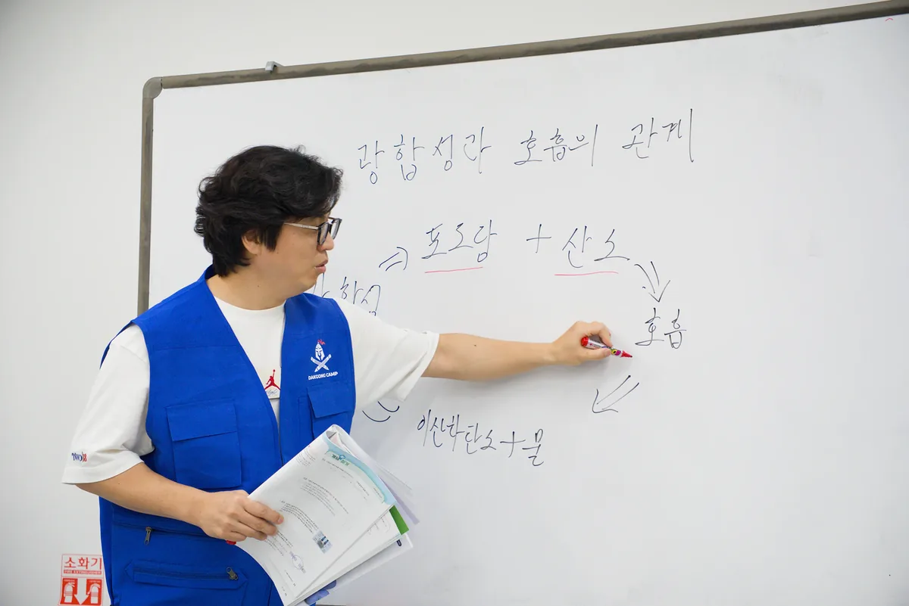
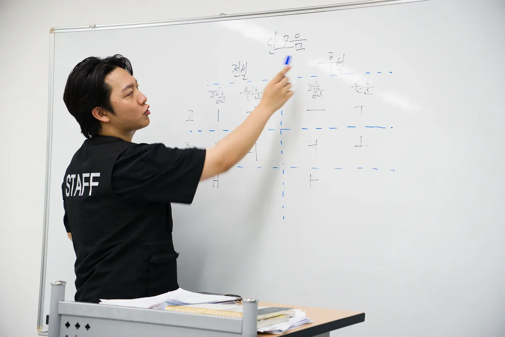
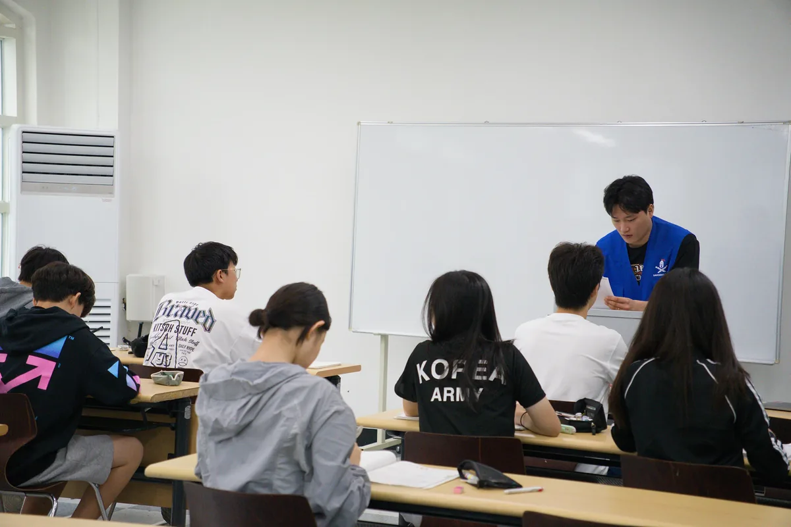
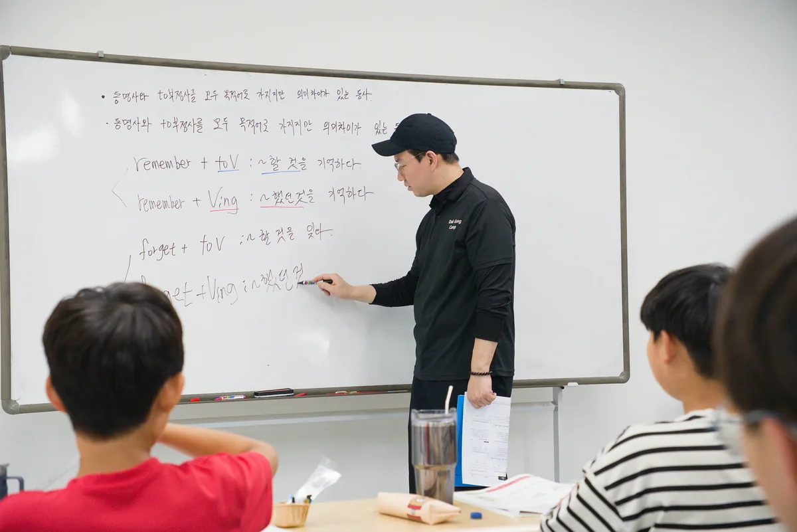
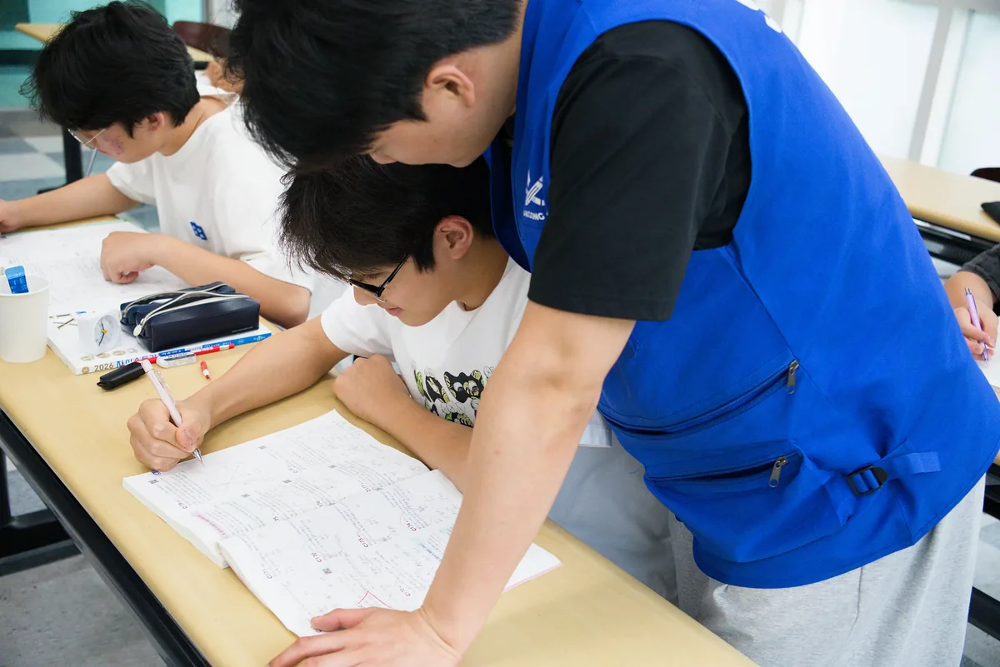
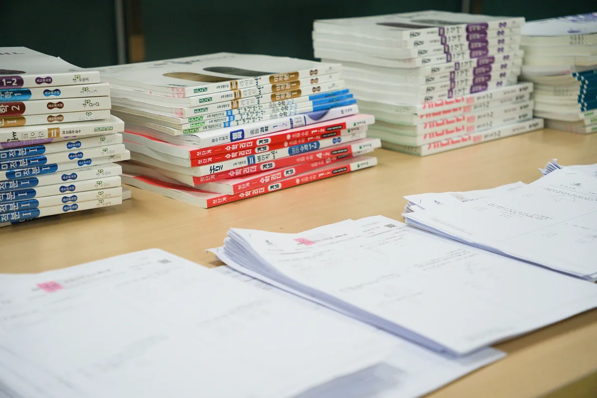
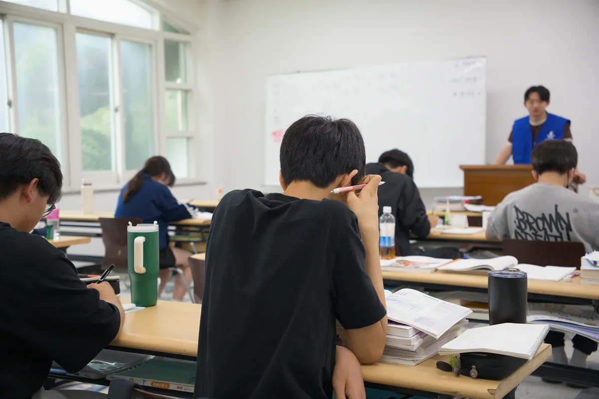

01
수학
핵심과목 · 주중
- 반 편성
- 학년과 상관없이 입소 전 진도와 현재 실력을 정밀 분석해 반을 구성합니다.
- 수업 방식
- 개념 강의 → 수준별 문제풀이 → 오답 관리 → 반복 학습이 계속 순환합니다.
- 학습 방향
- 선행학습 위주로 진행하되, 놓치기 쉬운 현행 학습까지 연계 관리합니다.
국어·영어 특강부터 수능대비까지
한 곳에서 챙깁니다.
닥공캠프 한국 스파르타 캠프는 수학을 중심축으로 국어, 영어특강, 수능대비, 선택과목, 관리형 자습, 멘토링까지 입시에 필요한 주요 과목 밸런스를 완벽하게 책임집니다.
닥공 한국 스파르타 캠프
6대 핵심
수업 구성
수학을 중심으로
여섯 가지가 맞물립니다
수학
핵심과목 · 주중
절대적 학습량을
확보합니다
국어 · 영어 특강
주말특강
입시 핵심 과목의
맥락을 잡습니다
수능 대비 집중반
고2~고3
실전 수능 흐름을
몸에 새깁니다
과학 · 사회 선택과목
개인 선택
탐구 과목을
조기 완성합니다
SKY · 의대 선배 멘토링
캠프 내 상주
성적 · 생기부 · 멘탈까지
함께 봅니다
관리형 자기주도학습
24시간
감독 상주로
실행력을 담보합니다
핵심과목 · 주중
주말특강
학년별 맞춤 · 고2~고3
목표별 선택 · 개인 신청
동기부여 · 캠프 내 상주
몰입 환경 · 24시간
과목별 목적에 맞춰 수업이 나뉘고, 학생은 자기 수준의 반에서 그 목적만 따라갑니다.


| 구성 | 배분 |
|---|---|
| 수학 수업 | 하루 6시간, 총 8타임 |
| 과학 수업 | 하루 1시간 30분 |
| 국어 주말 과제 | 약 1시간 |
| 영어 주말 수업 및 과제 | 약 1시간 |
| 야간 추가수업 | 선택과목, 실전반, 개인·소규모 요청수업 |
| 관리형 자습 | 학생별 과제와 목표 학습량에 따라 별도 운영 |
9시간은 강의시간만이 아니라 수업·과제·오답관리를 포함한 총 학습량입니다. 학년과 선택수업 여부에 따라 세부 구성은 달라질 수 있습니다.
하루 흐름 타임랩스
권장 21:6 · 기상부터 취침까지 압축 · 실물 확보 후 이 자리에 삽입
학년과 상관없이 입소 전 진행해온 진도와 현재 실력을 정밀 분석해 최적의 반을 구성합니다. 같은 학년이라도 선행 정도와 문제 해결 수준이 다르면 서로 다른 반에 배정될 수 있습니다.
닥공캠프는 학생의 발달 단계와 입시 시기에 맞춰 중등부는 공부 습관과 수학 기본기를, 고등부는 내신·수능형 학습량과 실전 루틴을 더 강하게 통제하고 관리합니다.
| 구분 | 중등 | 고등 |
|---|---|---|
| 핵심 목표 | 수학 기본기, 선행 진도, 공부 습관 형성 | 내신·수능 대비 학습량 확보와 실전 문제풀이 강화 |
| 수학 운영 | 개념 설명, 유형별 반복 훈련, 현행·선행 병행 | 진도별 반 편성, 고난도·오답 누적 관리, 수능형 문제 적응 |
| 국어·영어 | 문법·독해 기초 확립, 모의고사형 문제 적응 | 수능형 지문 독해, 시간관리, 오답 분석 |
| 자습 관리 | 정해진 시간 앉아 공부하는 루틴, 질문 습관 만들기 | 일일 학습량 점검, 약점 보완, 모의고사 후 오답 루틴 관리 |
| 멘토링 | 명문대 선배들과의 교감, 공부 방법 습득, 동기부여 | 실전 입시 경험 공유, 멘탈 케어, 과목별 전략 점검 |



입소 전 학부모 상담으로 현재 학교·학년·최근 학습 진도·취약 단원을 확인합니다. 필요하면 자체 테스트를 진행하고, 수업 시작 후에도 실제 이해도와 과제 수행 상태를 확인해 최종 반을 조정합니다.
수학
희망 진도의 이전 1년 과정 테스트 + 희망 진도 과정 테스트. 고등부는 내신형·모의고사형 문제를 모두 확인합니다.
국어·영어
고등부 모의고사 수준을 기준으로 우선 레벨을 구분하고, 판단이 어려운 학생은 자체 제작 테스트를 추가로 진행합니다.
아래 반 개수는 최대 구성 예시이며, 캠프별 참가 학생의 학년과 진도 분포에 따라 조정될 수 있습니다.
수학
초·중·고 선행 6개예시
중1~고2 내신대비반 6개예시
심화반 2개예시
과학
중등과학 내신대비 3개예시
고등 과학Ⅰ 과정 2개예시
개별 선택과목
국어·영어
주말 특강 과목별 3~4개예시 수준별 반


학생에게 무조건 현재 반을 유지하도록 하지 않습니다. 수업을 충분히 소화하고 여유가 있다고 판단되면 상위 반이나 빠른 진도로의 조정도 검토합니다.
수업 참여상태 확인
담당교사 의견 확인
학생 면담
부족 단원 보완
학부모 상담
필요 시 반 조정